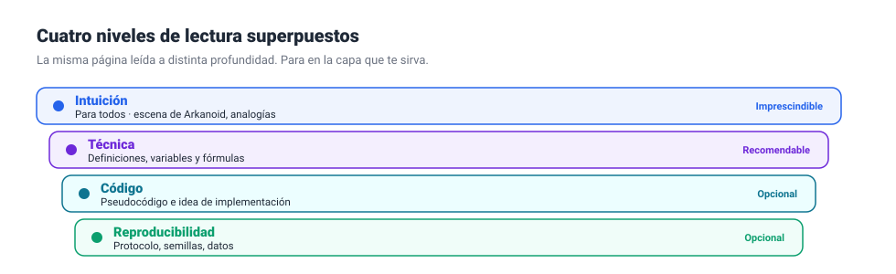
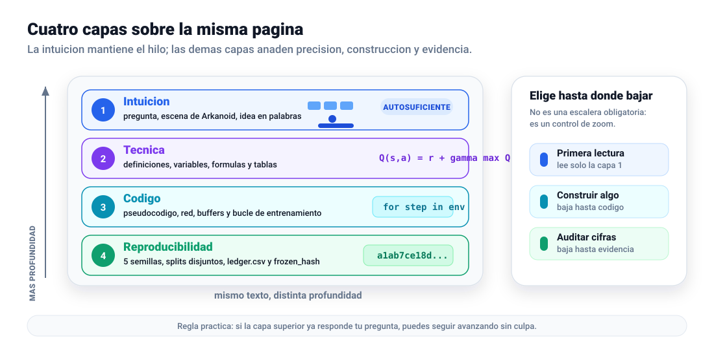
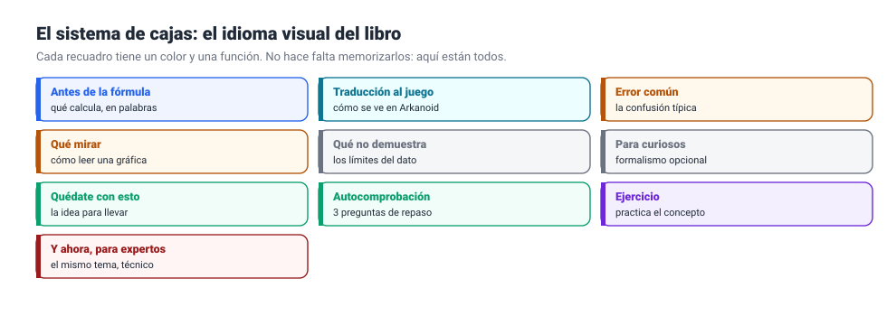
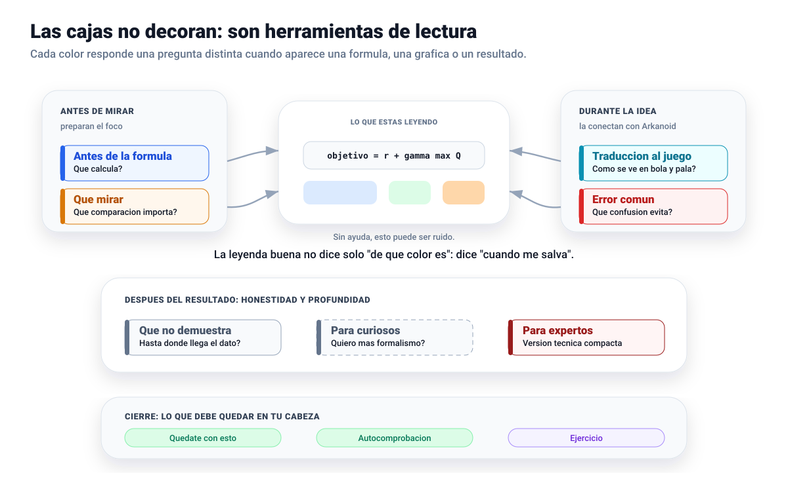
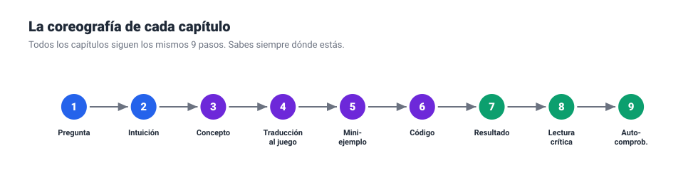
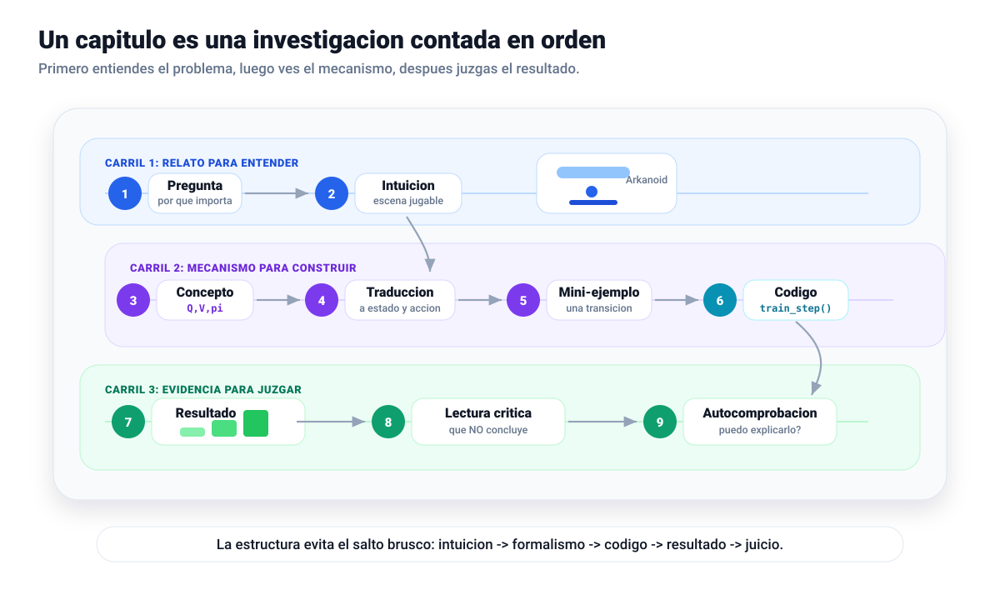

1. Niveles de lectura
La figura actual enumera capas; la propuesta muestra que son capas de una misma pagina y ofrece rutas por objetivo.
Original Claudevis_niveles_lectura.svg

Propuesta Codexcodex_vis_niveles_lectura.svg

Mejora propuesta: convierte la jerarquia en un modelo mental util: leer con zoom. Tambien deja claro que la primera capa es autosuficiente.
2. Sistema de cajas
La figura actual lista los tipos; la propuesta los agrupa por momento de uso y corrige el color de Error comun para alinearlo con el CSS real del informe.
Original Claudevis_leyenda_cajas.svg

Propuesta Codexcodex_vis_leyenda_cajas.svg

Mejora propuesta: el lector aprende cuando usar cada caja: antes de una formula, durante el concepto, despues de un dato o al cerrar el capitulo.
3. Coreografia del capitulo
La figura actual es una linea de nueve pasos; la propuesta conserva el orden, pero explica las fases narrativas.
Original Claudevis_coreografia.svg

Propuesta Codexcodex_vis_coreografia.svg

Mejora propuesta: muestra la logica del capitulo como una investigacion contada al lector: problema, mecanismo, implementacion, evidencia y comprobacion.